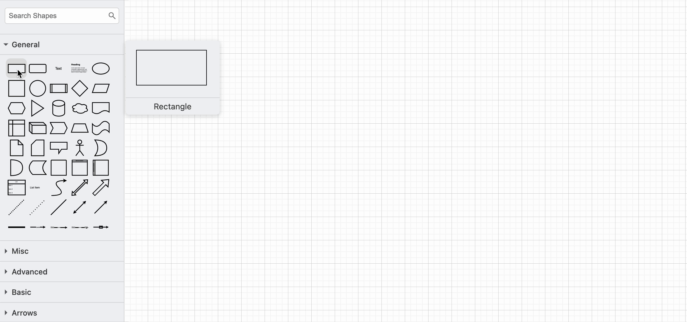
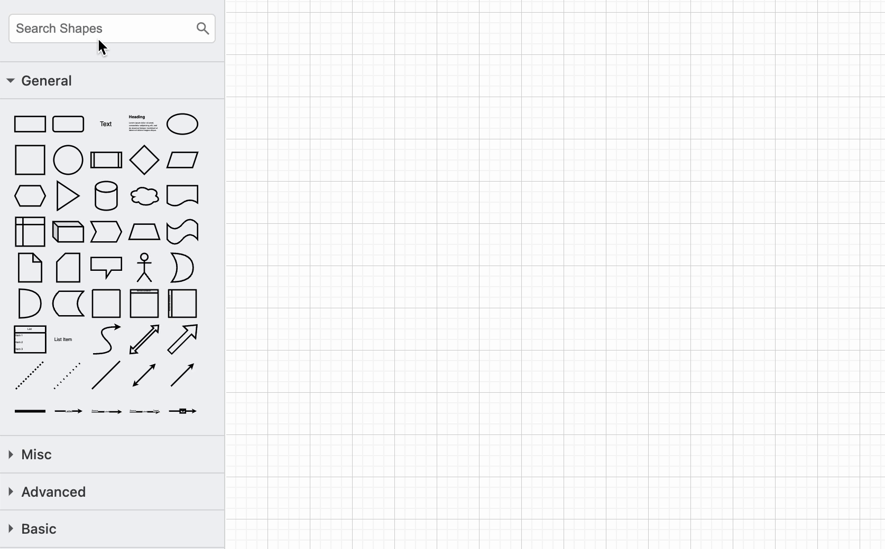
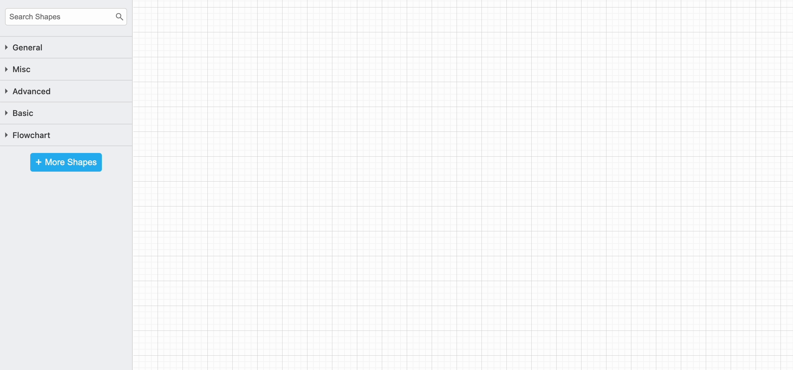
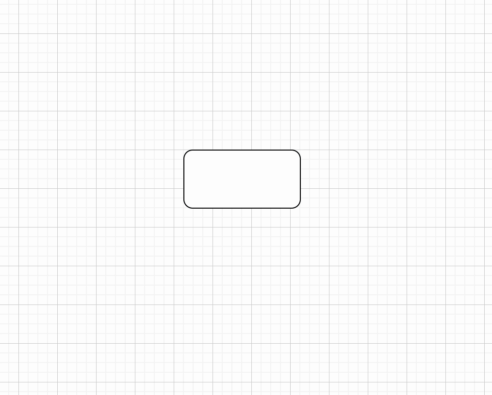
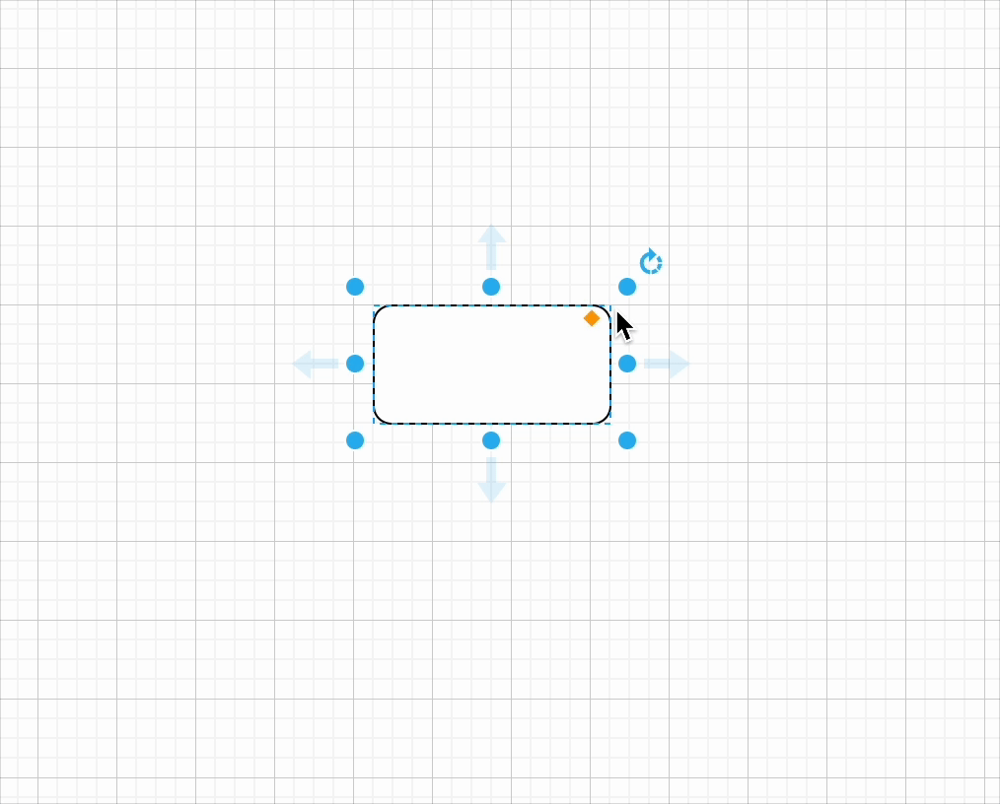
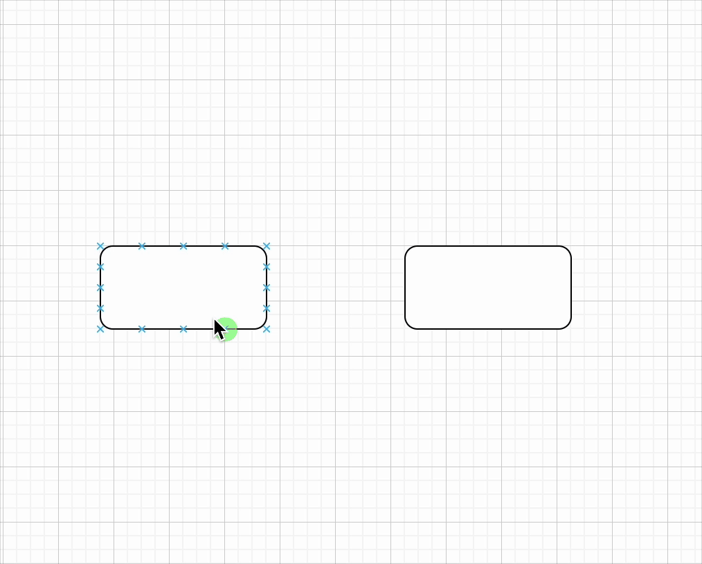
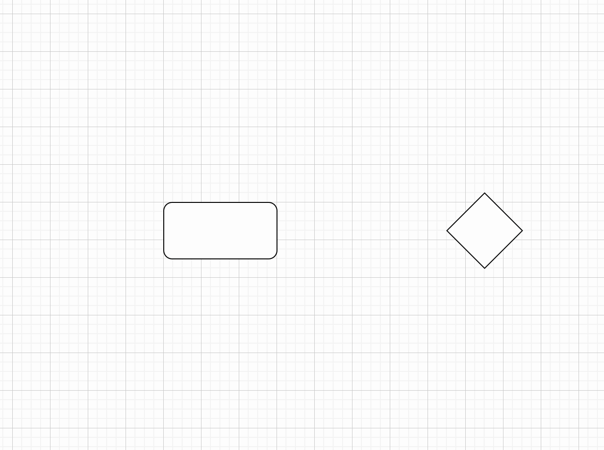
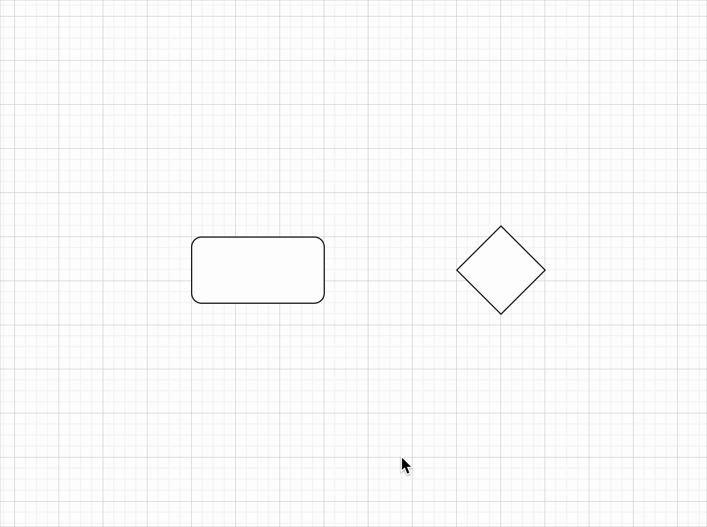
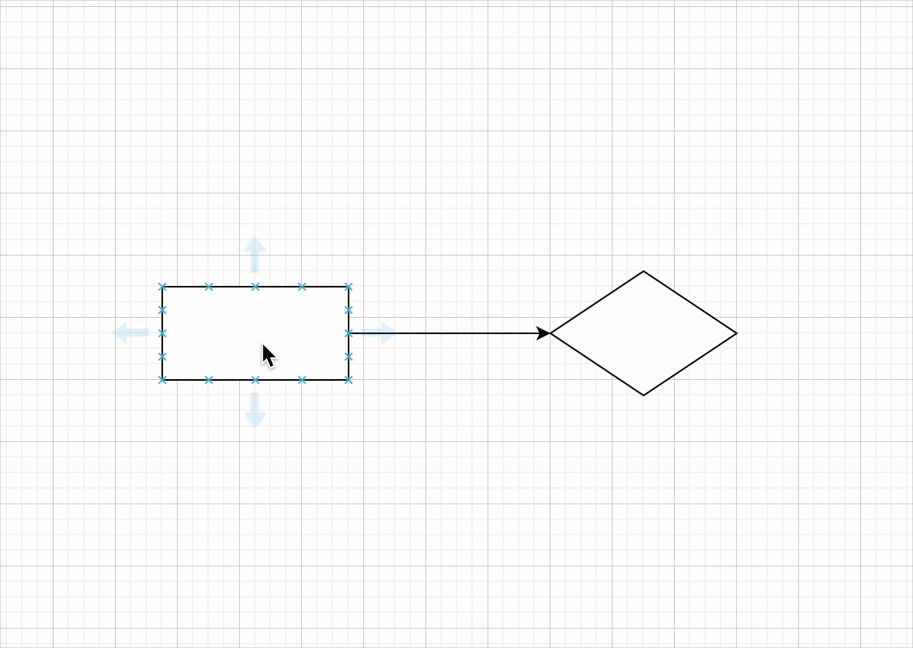
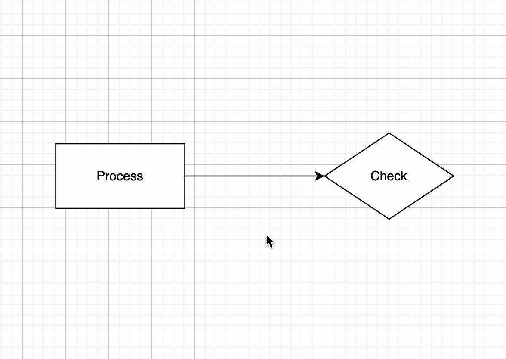

Create a diagram
Overview
In this section, you will learn how to create diagrams by adding, modifying, and connecting shapes. You will also explore how to label elements effectively to make diagrams more understandable. This guide provides step-by-step instructions to help you master these fundamental skills.
Fundamental Steps to Create a Diagram
Add a Shape
Use one of the following to add a shape to the drawing canvas:
-
Click on a shape in the General shape library to add it to the drawing canvas.
-
Drag a shape from the General shape library to a specific position on the drawing canvas.
-
Double-click on an empty area on the drawing canvas and select a shape.

Search for a Shape
You can quickly search for a desired shape by using the Search Shapes function.
-
In the left sidebar, find the "Search Shapes" box at the top.
-
Type a relevant keyword related to the shape you need (e.g., arrow).
-
Click on the shape from the search results or drag and drop the selected shape into your canvas.

Add a Shape Library
In addition to the shapes in the General and Advanced shape libraries, you can use shapes from the Flowchart shape library.
-
Click on "More Shapes" located at the bottom of the left sidebar.
-
A pop-up window will appear, displaying various shape categories. Check the boxes next to the desired shape library to enable it.
-
Click "Apply" to include the selected libraries in your canvas.

Move, Resize, Rotate, and Delete Shapes
Move - Select and drag a shape that is on the drawing canvas to another position.

Resize - Select a shape. Drag any of the round ‘grab’ handles to make the shape smaller or larger. Hold Control (Windows/Linux) or Command (Mac) to keep them centred. Hold Shift to resize them proportionately.

Rotate - Select a shape. Drag the rotate grab handle (the round arrow) at the top right corner of the shape to rotate the shape around its center point.
Delete - Select a shape, then press Backspace or Delete, or click on the Delete tool in the toolbar.

Connect the Shapes
Draw a Floating Connector
Floating connectors move around the perimeter of your shape as you move it around the drawing canvas, or change the route that the connector takes.
- Hover over the source shape until you see the light direction arrows appear.
- Move your mouse cursor over the direction arrow you want to draw the connector from, then drag the connector out from the arrow towards the target shape.
- Hover over the target shape and release when the outline of the shape is blue.

Draw a Fixed Connector
Fixed connectors stay attached to a fixed point on your shape, even when you move the shape around the drawing canvas.
- Hover over the source shape until you see the little crosses, connection points, around the shape perimeter.
- Drag a connector from the connection point on the source shape towards the target shape.
- Hover over the target shape until you see the connection points, then hover over one of the connection points until it is highlighted in green, and release to attach the connector.

Add Labels
Short labels on shapes make it easier to understand a diagram quickly.
Add a Shape Label
- Click on a shape and type the text to add a new or replace a label.
- Press Enter (Linux/Windows) or Control + Enter (Mac) to save the label.

Tip: Press Shift + Enter to add a line break in a label.
Add a Connector Label
You can add more than one label to a connector - at the source end, the target end, and in the middle.
- Double click in the position you want to add a text label there.
- To reposition the connector label text, click on the label, then drag the small yellow diamond to a new position.

Conclusion
By the end of this section, you will have successfully learned the following:
 How to add, move, resize, and delete shapes on the drawing canvas.
How to add, move, resize, and delete shapes on the drawing canvas.
How to connect shapes using floating and fixed connectors.
How to add labels for both shapes and connectors.
Great job  ! You can go ahead and click on the link below to move on to the next step:
! You can go ahead and click on the link below to move on to the next step: